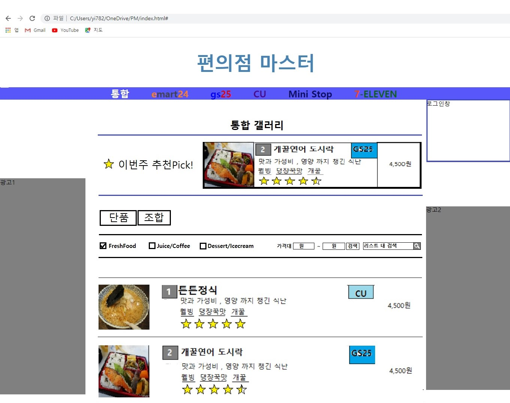

(초안)

Q: 왜 구상하게 되었나?
A: 편의점에서 일을하다보니 편의점 음식을 먹게되었고, 먹다보니
질려서
편의점에서 맛있는 음식들을 조합해서 먹을수 없을까?
하는 생각에 구상해봤다.
Q: 어떤 프로그램인지 간단히 설명좀
A: 편의점 갤러리 느낌으로 구상했다. 주된 내용은 "마크정식" 같은
편의점 음식으로 만들수있는 자신만의 꿀조합을 남들과 공유하는것에 있다.
Q: 어떻게 구현할 생각인가?
A: 우선 pc버전 편의점마스터를 만든후 모바일 버전을 만든다.
그 후 검토와 수정을 거쳐 주변
인물들을 토대로 시험 운영을 해보고
반응이 나쁘지 않다면 다른 사이트들에 홍보하여 사이트를 운영해
나갈
생각이다.
*고민중인 내용* : 현재 쓸수있는 html,css,javascript 로 어디까지
가능할지 모르겠다.
k-bum 도와줘!